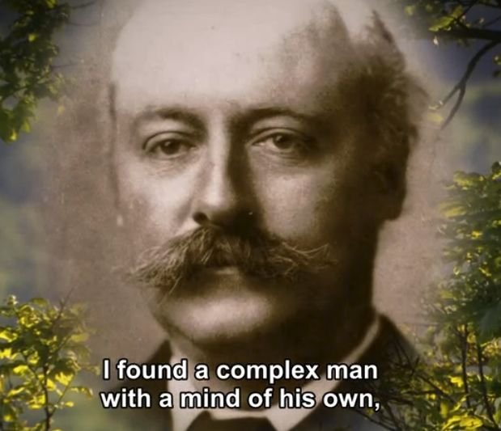
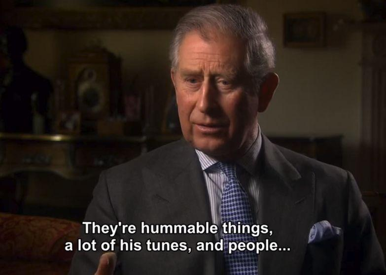
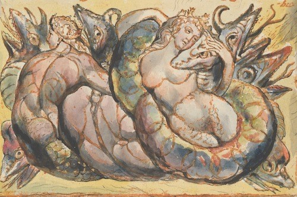
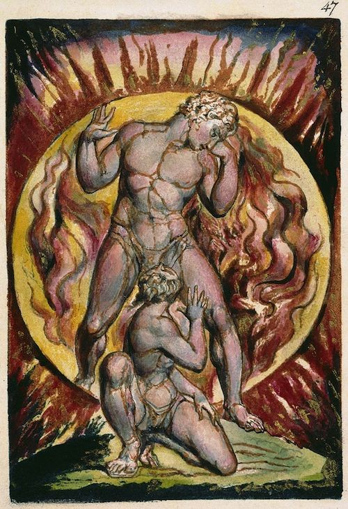

《耶路撒冷》（Jerusalem）這首聖詩由英國著名詩人威廉．布萊克（William Blake, 1757-1827）作詞、休伯特．帕里（C. Hubert H. Parry, 1848-1918）譜曲；收錄於英國聖公會的《古今聖歌集》（Hymns Ancient and Modern, 一八六一年初版，全紅色那本）；亦見於好幾本英國的詩集中（如BBC的Song of Praise〔一九九七〕收為第三七五首、Complete Mission Praise〔一九九九〕改詞後收為第四三八首），唯不見香港有詩集收錄此歌。《古今聖歌集》放此歌在「國家」類，剛好在God Save the Queen之前──《天佑我皇》是英國國歌人盡皆知，但當中強調「尊君愛主」的思想卻並非每個英國人都認同的──於是有些英國人便視《耶路撒冷》為第二國歌、尤其是一些不太喜歡皇室、有共和傾向的英國人

耶路撒冷固然是座中東的城市。英國的基督徒宗教觀念上認耶路撒冷為聖城，因此也樂於見到、樂於支持信奉猶太教的以色列╱猶太人在此建立國家。另一方面，正如朗利（Clifford Longley）所言，耶路撒冷也是個「觀念」，是「山上的聖城」──把「耶路撒冷」等同「天國」，便帶出誰才是真正「選民」的問題──而朗利在此正是醒察到若貿然把「選民」等同於某一「國族」，便可能會帶來種族主義、反猶主義、甚至殖民主義等狹隘排外的思想。（見英國教會雜誌The Tablet，二○○一年八月十八日。網頁：http://www.clongley.cwc.net/main.html）
看到英美基督徒在聖詩背後展現出的國族認同、當中有政見不同帶來的爭持、也有對背後可能隱含殖民主義侵略危險的自我批判與反省（清楚見於也是紅色封面的《普天頌讚》初版〔一九三五年〕「教會：為國祈禱」類中二二九之一、二二九之二和二三○等三首詩歌中）；回首再看中國人在歌曲中展現出的國族認同問題，可說是感慨良多。
英國人和美國人大致上都認同「聖經宗教」，並以此為立國基礎。因此即使有黨爭（如帝制抑或共和），也有個道理要在老頂（上帝）面前「和」起來或「合」起來（所謂In God We Trust）、或者有個「本子」（聖經）可依、可以返宗廟（大教堂）擺和頭酒；就算連可能不認同或甚至反對「聖經宗教」的人，都要引用聖經立論一番。（像Liberation Theology利用出埃及記，Joe Hill 的 "the Preacher and the Slaves"出自聖詩，或者像Paul Robeson一類人唱Negro Spiritual和《義勇軍進行曲》來表達「求解放」的信息之類。）所以「聖經」或「聖經宗教」可以成為他們「一」起來的力量或焦點。
相比之下，中國人要「一」起來，可說是「毫無共同基礎、認同全不一致」：佛教蓮花耶教十架儒道回哈等宗教之別可能還好辦──如果大家還認同「有容乃大、各觀天命」的話。弊就弊在政治上，大陸那個「國際唯一合法政權」又沒有這量度，硬要「全中國人」相信及認同她那一套的皇者地位──但那套思想中許多觀點都很難叫人折服，又怎能硬要「全中國人」心悅誠服地認受？──受不了的便移民、寧願自己的後代叫CBC（Canadian-Born Chinese）、華人、新加坡人、台灣人、香港人等──那套思想怎能用作「公民教育」（Citizenship╱Civic Education）或「國民教育」（Nationality Education）去教育下一代？你信不要緊、你不要迫我信嘛！（最慘現在好像已經當全民有了共識一樣，還要在香港立法保障這些未經討論、神聖不可侵犯的「國家天條」。）
只舉一例：常說孫中山少時破除封建迷信、打爛祖宗廟宇神像很英雄，結果竟是：騰出的神位空缺，由「毛神」頂上──中國人其實至今也不懂得「無神論」真義。到今時今日，中國北京天安門廣場仍然由一具遺體和一幅遺像把守、天安門城樓仍然似私人墓碑多過國家建築（「人民英雄」也只是待在一旁）；天安門廣場依然是中國人民拜山的好去處──四五、六四就是這樣拜山拜出慘案來。我認為如果相信「世界人民大團結萬歲」的話，就應該掛世界地圖、至少都掛幅中國地圖啦！「宗廟」未建好、「本子」又無（你認同現時中國憲法的內容嗎？你認識現時中國憲法的內容嗎？中國憲法的內容是誰商量出來的？），怎樣「一」？「名不正、言不順；禮不宜，樂不和。」這就是「海棠葉中國」的現況：唯有台灣得見多黨制衡的政體，但他們唱的國歌竟然黨國不分；大陸同學天天唱「起來！不願做奴隸的人們！」，卻分明仍是奴隸、不懂得起來做主人！──我最認同為普羅大眾請命而早夭的聶耳（1912-1935）和他的《義勇軍進行曲》──因為他作曲之時根本不知道甚麼是「中華人民共和國」、更不知道甚麼是「中華人民共和國國歌」！
（二○○三年六月四日。適逢紀念中國偉大詩人屈原的端午節、又是英女皇登基五十週年。）
(第八二四期，二ＯＯ三年六月十五日)
https://zh.wikipedia.org/wiki/%E8%80%B6%E8%B7%AF%E6%92%92%E5%86%B7_(%E8%AE%9A%E6%AD%8C)
耶路撒冷
Jerusalem
(讚歌)
[編輯]
《耶路撒冷》（英語：Jerusalem）是英國一首愛國歌，音樂由休伯特·帕里於1916年編寫而成，歌詞則取自威廉·布萊克的短詩。
歷史[編輯]
原詩[編輯]

1808年，威廉·布萊克出版了他的長詩《米爾頓》，其自序上有一首短詩[1]：
詩尾有摘自聖經的句子："Would to God that all the Lords people were Prophets" Numbers XI. Ch 29. v.'[1]（民數記11：29）[2]。
此詩的靈感來自一個描述耶穌和亞利馬太的約瑟（Joseph of Arimathea）一起到了格拉斯頓伯里（Glastonbury）的經外故事[3]，而故事則源自聖經啟示錄（3：12及21：2）中耶穌將會再臨世界並建立新耶路撒冷的概念。
對此詩最普遍的解釋為：耶穌可能曾造訪英格蘭，令英格蘭曾短暫變成天堂，但現時工業革命下的英格蘭正被撒旦的麵粉廠侵占，而布萊克則會抗爭到底，令英格蘭變回天堂的樣子。
後世[編輯]
這首歌曾在1920年代成為英國爭取女性投票權組織全國女性參政運動社團聯盟（National Union of Women's Suffrage Societies）的代表歌曲。
此歌現時在英國也非常受歡迎，會在不少場合演唱（如逍遙音樂會的最後一夜及工黨年度會議）。更因英格蘭並無法定國歌，所以在很多的體育比賽中（如板球及2010年大英國協運動會等）會以此作為其國歌（其餘時間則會用英國慣用國歌《天佑吾王》）。
因觀眾對此歌的熟悉，英國很多電影及電視劇均曾引用，如《烈火戰車》的片名便是取自其中歌詞。其他曾引用此歌的影視作品有《星空奇遇記：銀河前哨》及《四個婚禮一個葬禮》等。
除此以外，香港聖傑靈女子中學及何明華會督銀禧中學亦以經過改編的此曲作為校歌。
https://read01.com/zh-mo/3G6y5og.html#.YN06qfkzbIU
BBC紀錄片親王與作曲家：休伯特·帕里.2018
BBC紀錄片親王與作曲家：休伯特·帕里.2018 2018/11/26 來源：我愛紀錄片 The.Prince.and.the.Composer.A.Film.about.Hubert.Parry.by.HRH.The.Prince.of.Wales
查爾斯·休伯特·哈斯廷斯·帕里爵士（英語：Sir Charles Hubert Hastings Parry，1848－1918），英國作曲家、音樂教育家，發揚英國合唱音樂的傳統，特別是讚歌《耶路撒冷》被譽為第二國歌。本紀錄片由威爾斯親王查爾斯王子講述大師作品。

帕里的父親是一位富裕的畫家。他被送進伊頓公學學習，後來又到勞合社經商，但一直業餘學習音樂。學於牛津大學(音樂俱樂部創辦者之一)。師從斯騰代爾·貝內特和麥克法倫，1871年進入商業界，但三年後放棄商業從事音樂，他師從E.丹羅伊特學習鋼琴，後者於1880年演奏了帕里的鋼琴協奏曲。
他的許多合唱作品，特別是《一對幸福的海妖》(Blest Pair of Sirens)(1887)在勃拉姆斯和巴赫被人們稱為典範的時期，確立了他在英國作曲家中與斯坦福齊名的前列地位。他寫過數種不同體裁的大量作品，(1885-86年甚至創作過一部未上演的歌劇《圭尼維爾》(Guinevere))，並且通過他的教學對英國的音樂產生了積極影響。1883年執教於皇家音樂學院，1884年成為院長，直到逝世。1900-08提任牛津大學的音樂教授，1898年封為騎士，1903年晉封男爵，他的《離別之歌》(Songs of Farewell)是一部著名的無伴奏寫法的作品，另外他為著名英國配曲的傑作稱為《英國抒情曲》(English Lyrics)的是極為美妙的，

1916年他為布萊克的《耶路撤冷》(Jerusalem)所譜寫的音樂象艾加爾《希望和光榮的土地》(Land of Hope and Glory)一樣，成為一首國內流行的歌曲。有數種著作問世，其中有《偉大作曲家研究》(Studies of the Great Composers)(1886)，《音樂藝術的發展》(The Evolution of the Art of Music)(1896)，《音樂藝術風格》(Style in Musical Art)(1911)，《J.S.巴赫》(J.S.Bach)(1909)。
'And did those feet in ancient time': William Blake’s Vision of
Jerusalem
BY VINCENT KATZ

William Blake, Jerusalem, Plate 75, And Rahab Babylon the Great…, 1804-1820
William Blake, Jerusalem, Plate 75, And Rahab Babylon the Great…, 1804-1820
I can’t quite remember what brought up William Blake, or the
poem known as “Jerusalem.” But suddenly, I was brought back to the Hubert
Parry anthem setting of this poem. It’s ironic to me, and I can’t quite figure
it out, how an anthem that King George V preferred over “God Save the King,”
and that infiltrated popular culture, being adored as a sublimely patriotic
song, could have arisen from a poem whose lyrics and their composer harbor
distinctly non-conservative views. Perhaps that’s the genius of Blake, or
Parry, or both.
Blake had a complicated relationship to religion, or spirituality, and it is
that relationship that makes his work intriguing, if sometimes baffling, to
contemporary readers. He created an entire alternate universe, almost like
science-fiction, his own mythological world, and yet he believed in the
essence, as he saw it, of Christianity.
Blake’s poem, which he did not call “Jerusalem,” comes in the preface to his
epic Milton: A Poem in Two Books, composed between 1804 and 1810. First, there
is a screed attacking Greek and Latin writers: “The Stolen and Perverted
Writings of Homer & Ovid, of Plato and Cicero, which all Men ought to contemn,
are set up by artifice against the Sublime of the Bible… Shakespeare and
Milton were both cursed by the general malady & infection from the silly Greek
& Latin slaves of the Sword.” He rails against hirelings in “the Camp, the
Court & the University” and begs painters and sculptors not to give in to the
temptation of lucre and false advertising. Then he writes something odd: “We
do not want either Greek or Roman models if we are but just & true to our own
Imaginations, those Worlds of Eternity in which we shall live forever in Jesus
our Lord.”

William Blake, Milton: A Poem, plate 47, 1804-1811
William Blake, Milton: a Poem, plate 47, 1804-1811.
In the final sentence, Blake seems to equate the human imagination with a Christian vision. Many today would argue that imagination is a personal realm, sacred to the self, inaccessible to any outside influence, whereas religion is precisely that kind of organizing system that someone like Blake should decry. But I believe Blake, for all his odd conceptions and inconsistencies, thought deeply about literature and saw in the Bible, and in the figure of Christ in particular, an antidote to the rise of the Industrial Revolution, which he saw as a terribly pernicious cancer in the society of his time.
That, to me, is the meaning of the idea of “Jerusalem” for Blake, which is what I’ve been trying to figure these last weeks, while thinking of the poem often referred to by that title, and which follows the anti-Classics rant in Blake’s preface to Milton:
And did those feet in ancient time
Walk upon Englands mountains green:
And was the holy Lamb of God,
On Englands pleasant pastures seen!
And did the Countenance Divine,
Shine forth upon our clouded hills?
And was Jerusalem builded here,
Among these dark Satanic Mills?
Bring me my Bow of burning gold:
Bring me my arrows of desire:
Bring me my Spear: O clouds unfold!
Bring me my Chariot of fire!
I will not cease from Mental Fight,
Nor shall my sword sleep in my hand:
Till we have built Jerusalem,
In Englands green & pleasant Land.
I got to know the music of Hubert Parry in a small chapel whose evensong offerings had a special quality, due to the curation of Martin Stokes, now King Edward Professor of Music at King’s College, London. Stokes would combine anthems by 16th and 17th century English composers, such as Thomas Tallis, William Byrd, Orlando Gibbons, and Henry Purcell, with 20th century offerings by such composers as Edward Elgar and Ralph Vaughan Williams. It is in this latter group that Parry belongs.
During World War I, Britain’s poet laureate, Robert Bridges, approached Parry, asking him to compose music to Blake’s poem as part of an inspirational package to boost sinking morale. It was Bridges who, in a sense, rescued this poem from relative obscurity. From the time of its composition in 1916, the song was popular; it was used by the Suffragettes in 1917 and thereafter by political parties from across the spectrum. In 1922, Elgar composed an orchestral version of Parry’s song, and this was the version King George V said he preferred to “God Save the King.” Basically, every Briton who has love for the myths of England gets moved hearing and especially singing this song setting of William Blake’s poem.
Many people have pointed out that a simplistic love of country (if that is indeed what people are feeling) would be completely at odds with Blake’s philosophy and life’s work. Blake was a critic of the Industrial Revolution and the Church, an advocate of the Free Love movement, and a forerunner of women’s rights movements. He admired Mary Wollstonecraft and illustrated a book of her writing.
William Blake, frontispiece to MaryWollstonecraft's Original Stories from Real Life
William Blake, frontispiece to MaryWollstonecraft's Original Stories from Real Life, 1791.
There is something ancient about the sound of the music, which accords perfectly with Blake’s vision in the poem. I believe it is in the use of modal melodies, which Parry then deftly switches to tonal cadences, bringing the ancient into the contemporary, Edwardian, moment. In Parry’s version, Blake’s poem presents a vision of England as an eternal, and vernal, place. People singing the song must hear mainly the words “ancient” “Englands mountains green” “Lamb of God” “pleasant pastures seen” “Countenance Divine” “Jerusalem builded here” “Bow of burning gold” “arrows of desire” “my Spear” “my Chariot of Fire!” “I will not cease” “Till we have built Jerusalem, / in Englands green & pleasant Land”.
Parry, or maybe Bridges, or both working together, made one slight change to Blake’s poem, which has massive repercussions in its interpretation. They were shrewd to make it, and I don’t think the song would have the success it has had without it. The most striking line in the poem is undeniably “Among these dark Satanic mills”. Parry and Bridges changed “these” to “those,” instantly transporting Satan and his factories of Evil off of the blessed Isle and onto other peoples, probably Europeans.
Another thing one needs to know about the poem is the myth that Jesus once visited England, possibly with Joseph of Arimathea, who took him down from the cross. There seems to be little written record of this myth. Could it have survived for centuries as a purely oral belief? In any event, this is the idea that Blake is toying with in his poem. But Blake cleverly poses a series of questions; he remains in doubt. In the center of the poem is this incredulous question, “And was Jerusalem builded here / Among these dark Satanic mills?” “Dark Satanic mills” clearly refers to England’s burgeoning mill and factory economy, which Blake and others decried as depriving poor people of their livelihood and connection to nature and to their own production, while subjecting them to brutal hours and dangerous conditions. Some see an additional meaning in “mills” here as referencing England’s churches, which makes sense, as Blake was opposed to any kind of bondage, including through religion. Changing “these” to “those” alters the scope of “among,” putting Jerusalem here in England, while those evil mills are around about in other lands, across the Channel or Ocean.
The military imagery is another mysterious element. It allows patriots to get fired up, when they sing about their bow and arrows and spear and chariot of fire. But Blake would not have wanted the words to be read in a nationalistic, militaristic way. If anything, these words must be understood metaphorically as something akin to the Shambhala idea of “warrior in the world,” that is, Blake, and those who agree with him, will take up metaphorical arms to battle dehumanization and oppression—and to establish Jerusalem in England.
What exactly does Blake intend by “Jerusalem”? Again, in various writings, including his epic poem Jerusalem, he works around the issue, reluctant to state his belief in definitive terms. I understand that by “Jerusalem” Blake intends another metaphor, this time to stand for an ideal world of love and mutual respect, as evidenced in the most literal interpretation, in Blake’s eyes, of the teachings of Jesus, perhaps even taking them out of the context of the Bible and the clutches of church elders through the centuries. In essence, Blake is calling for an anarchist world, free from oppressive contracts, including marriage. That is what he would see flourishing “In Englands green & pleasant Land.”
What amazes me still is the transformation—how Parry, at Bridges’s instigation, could have taken this hitherto largely unremarked poem and, with one important shift, turned it into a national, and often nationalist, hymn. It’s a tribute to Parry’s skill and sensitivity as a composer that, as he neared the end of his life, he could juggle all those balls and score one massive hit. It’s of course a tribute to Blake, though he would probably hate the edit of a word in his poem and the contexts into which his poem has been placed. Occasionally, one hears a performance in which the word “these” in the line “Among these dark Satanic Mills” is retained. It’s a thrilling moment, to hear Blake’s vision—and hope for a better world—restored. That vision recognizes the evil lurking on our doorstep and wants to work fervently to remove it. But all this still can’t explain the plaintive beauty built into the music and words.

Originally Published: November 22nd, 2017
Quick Tags
Vincent Katz is a poet, translator, curator, and critic. He earned his BA from
the University of Chicago and his MA from Oxford University. He is the author
of numerous collections of poetry, including Broadway for Paul (2020),
Southness (2016), Swimming Home (2015), Rapid Departures (2005), Understanding
Objects (2000), and...
Poetry in Context: “And did those feet in ancient time”
POSTED ON MAY 8, 2017
BY M.E. BOND
POSTED IN POETRY
TAGGED MUSIC, POETRY
Have you heard the rousing hymn “Jerusalem”? It’s based on William Blake’s
poem “And did those feet in ancient time,” which incorporates the legend that
Jesus visited England in his youth. The poem also displays Blake’s resistance
to the Industrial Revolution.
The Poem
And did those feet in ancient time,
Walk upon Englands mountains green:
And was the holy Lamb of God,
On Englands pleasant pastures seen!
And did the Countenance Divine,
Shine forth upon our clouded hills?
And was Jerusalem builded here,
Among these dark Satanic Mills?
Bring me my Bow of burning gold;
Bring me my Arrows of desire:
Bring me my Spear: O clouds unfold!
Bring me my Chariot of fire!
I will not cease from Mental Fight,
Nor shall my Sword sleep in my hand:
Till we have built Jerusalem,
In Englands green & pleasant Land.
Publication
“And did those feet in ancient time” was published in the preface of Blake’s
epic Milton: A Poem. According to The William Blake Archive, “Blake etched
forty-five plates for Milton in relief, with some full-page designs in
white-line etching, between c. 1804 (the date on the title page) and c. 1811.”
The Archive includes scans of four copies of Milton, though the Preface is
only present in Copies A and B, both printed c. 1811.
Copy A has been held by the British Museum since 1859.
Copy B is held by the Henry E. Huntington Library and Art Gallery in San
Marino, California. It was bought by Huntington for $9000 in 1911. Read
details of its provenance here.
Music
“And did those feet in ancient time” was set to music by Sir Hubert Parry in
1916. It appears that the song became known as “Jerusalem” around 1818. Sir
Edward Elgar re-scored the work for a larger orchestra in 1922.
“Jerusalem” has remained popular over the decades as an anthem and hymn, used
on such occasions as Women’s Institute meetings, cricket and rugby games, the
2012 Summer Olympics, and the wedding of Prince William and Catherine
Middleton.
(Did you catch that the title of the classic movie Chariots of Fire was taken
from this poem?)
https://en.wikipedia.org/wiki/And_did_those_feet_in_ancient_time
And did those feet in ancient time

The preface to Milton,
as it appeared in Blake's own illuminated version
|
|
|
Unofficial national anthem of |
|
| Also known as | Jerusalem |
|---|---|
| Lyrics | William Blake, 1804 |
| Music | Hubert Parry, 1916 |
"And did those feet in ancient time" is a poem by William Blake from the preface to his epic Milton: A Poem in Two Books, one of a collection of writings known as the Prophetic Books. The date of 1804 on the title page is probably when the plates were begun, but the poem was printed c. 1808.[1] Today it is best known as the hymn "Jerusalem", with music written by Sir Hubert Parry in 1916. The famous orchestration was written by Sir Edward Elgar. It is not to be confused with another poem, much longer and larger in scope, but also by Blake, called Jerusalem The Emanation of the Giant Albion.
The poem was supposedly inspired by the apocryphal story that a young Jesus, accompanied by Joseph of Arimathea, a tin merchant, travelled to what is now England and visited Glastonbury during his unknown years.[2] Most scholars reject the historical authenticity of this story out of hand, and according to British folklore scholar A. W. Smith, "there was little reason to believe that an oral tradition concerning a visit made by Jesus to Britain existed before the early part of the twentieth century".[3] The poem's theme is linked to the Book of Revelation (3:12 and 21:2) describing a Second Coming, wherein Jesus establishes a New Jerusalem. Churches in general, and the Church of England in particular, have long used Jerusalem as a metaphor for Heaven, a place of universal love and peace.[a]
In the most common interpretation of the poem, Blake implies that a visit by Jesus would briefly create heaven in England, in contrast to the "dark Satanic Mills" of the Industrial Revolution. Blake's poem asks four questions rather than asserting the historical truth of Christ's visit. Thus the poem merely wonders if there had been a divine visit, when there was briefly heaven in England.[4][5] The second verse is interpreted as an exhortation to create an ideal society in England, whether or not there was a divine visit.[6][7]
Text[edit]
The original text is found in the preface Blake wrote for inclusion with Milton, a Poem, following the lines beginning "The Stolen and Perverted Writings of Homer & Ovid: of Plato & Cicero, which all Men ought to contemn: ..."[8]
Blake's poem
Beneath the poem Blake inscribed a quotation from the Bible:[9]
"Dark Satanic Mills"[edit]

The phrase "dark Satanic Mills", which entered the English language from this poem, is often interpreted as referring to the early Industrial Revolution and its destruction of nature and human relationships.[10] This view has been linked to the fate of the Albion Flour Mills in Southwark, the first major factory in London. This rotary steam-powered flour mill by Matthew Boulton and James Watt could produce 6,000 bushels of flour per week. The factory could have driven independent traditional millers out of business, but it was destroyed in 1791 by fire, perhaps deliberately. London's independent millers celebrated with placards reading, "Success to the mills of Albion but no Albion Mills."[11] Opponents referred to the factory as satanic, and accused its owners of adulterating flour and using cheap imports at the expense of British producers. A contemporary illustration of the fire shows a devil squatting on the building.[12] The mills were a short distance from Blake's home.
Blake's phrase resonates with a broader theme in his works, what he envisioned as a physically and spiritually repressive ideology based on a quantified reality. Blake saw the cotton mills and collieries of the period as a mechanism for the enslavement of millions, but the concepts underpinning the works had a wider application:[13][14]
_detail-a.jpg)
Another interpretation, amongst Nonconformists, is that the phrase refers to the established Church of England. This church preached a doctrine of conformity to the established social order and class system, in contrast to Blake. In 2007 the new Bishop of Durham, N. T. Wright, explicitly recognised this element of English subculture when he acknowledged this alternative view that the "dark satanic mills" refer to the "great churches".[15] In similar vein, the critic F. W. Bateson noted how "the adoption by the Churches and women's organizations of this anti-clerical paean of free love is amusing evidence of the carelessness with which poetry is read".[16]
Stonehenge and other megaliths are featured in Milton, suggesting they may relate to the oppressive power of priestcraft in general; as Peter Porter observed, many scholars argue that the "[mills] are churches and not the factories of the Industrial Revolution everyone else takes them for".[17] An alternative theory is that Blake is referring to a mystical concept within his own mythology related to the ancient history of England. Satan's "mills" are referred to repeatedly in the main poem, and are first described in words which suggest neither industrialism nor ancient megaliths, but rather something more abstract: "the starry Mills of Satan/ Are built beneath the earth and waters of the Mundane Shell...To Mortals thy Mills seem everything, and the Harrow of Shaddai / A scheme of human conduct invisible and incomprehensible".[18]
"Chariots of fire"[edit]
The line from the poem "Bring me my Chariot of fire!" draws on the story of 2 Kings 2:11, where the Old Testament prophet Elijah is taken directly to heaven: "And it came to pass, as they still went on, and talked, that, behold, there appeared a chariot of fire, and horses of fire, and parted them both asunder; and Elijah went up by a whirlwind into heaven." The phrase has become a byword for divine energy, and inspired the title of the 1981 film Chariots of Fire, in which the hymn Jerusalem is sung during the final scenes. The plural phrase "chariots of fire" refers to 2 Kings 6:17.
"Green and pleasant land"[edit]
Blake lived in London for most of his life, but wrote much of Milton while living in the village of Felpham in Sussex. Amanda Gilroy argues that the poem is informed by Blake's "evident pleasure" in the Felpham countryside.[19] However, locals allege that records from Lavant, near Chichester, state that Blake wrote the poem in an east-facing alcove of the Earl of March public house.[20] [21]
The phrase "green and pleasant land" has become a common term for an identifiably English landscape or society. It appears as a headline, title or sub-title in numerous articles and books. Sometimes it refers, whether with appreciation, nostalgia or critical analysis, to idyllic or enigmatic aspects of the English countryside.[22] In other contexts it can suggest the perceived habits and aspirations of rural middle-class life.[23] Sometimes it is used ironically,[24] e.g. in the Dire Straits song "Iron Hand".
Revolution[edit]
Several of Blake's poems and paintings express a notion of universal humanity: "As all men are alike (tho' infinitely various)". He retained an active interest in social and political events for all his life, but was often forced to resort to cloaking social idealism and political statements in Protestant mystical allegory. Even though the poem was written during the Napoleonic Wars, Blake was an outspoken supporter of the French Revolution, and Napoleon claimed to be continuing this revolution.[25] The poem expressed his desire for radical change without overt sedition. In 1803 Blake was charged at Chichester with high treason for having "uttered seditious and treasonable expressions", but was acquitted.[26] The poem is followed in the preface by a quotation from Numbers ch. 11, v. 29: "Would to God that all the Lords people were prophets." Christopher Rowland has argued that this includes
The words of the poem "stress the importance of people taking responsibility for change and building a better society 'in Englands green and pleasant land.'"[7]
Popularisation[edit]
The poem, which was little known during the century which followed its writing,[27] was included in the patriotic anthology of verse The Spirit of Man, edited by the Poet Laureate of the United Kingdom, Robert Bridges, and published in 1916, at a time when morale had begun to decline because of the high number of casualties in World War I and the perception that there was no end in sight.[28]
Under these circumstances, Bridges, finding the poem an appropriate hymn text to "brace the spirit of the nation [to] accept with cheerfulness all the sacrifices necessary,"[29] asked Sir Hubert Parry to put it to music for a Fight for Right campaign meeting in London's Queen's Hall. Bridges asked Parry to supply "suitable, simple music to Blake's stanzas – music that an audience could take up and join in", and added that, if Parry could not do it himself, he might delegate the task to George Butterworth.[30]
The poem's idealistic theme or subtext accounts for its popularity across much of the political spectrum. It was used as a campaign slogan by the Labour Party in the 1945 general election; Clement Attlee said they would build "a new Jerusalem".[31] It has been sung at conferences of the Conservative Party, at the Glee Club of the British Liberal Assembly, the Labour Party and by the Liberal Democrats.[32]
Parry's setting of "Jerusalem"[edit]
In adapting Blake's poem as a unison song, Parry deployed a two-stanza format, each taking up eight lines of Blake's original poem. He added a four-bar musical introduction to each verse and a coda, echoing melodic motifs of the song. The word "those" was substituted for "these" before "dark satanic mills".
The piece was to be conducted by Parry's former student Walford Davies, but Parry was initially reluctant to set the words, as he had doubts about the ultra-patriotism of Fight for Right, but not wanting to disappoint either Robert Bridges or Davies he agreed, writing it on 10 March 1916, and handing the manuscript to Davies with the comment, "Here's a tune for you, old chap. Do what you like with it."[33] Davies later recalled,
Davies arranged for the vocal score to be published by Curwen in time for the concert at the Queen's Hall on 28 March and began rehearsing it.[35] It was a success and was taken up generally.
But Parry began to have misgivings again about Fight for Right and eventually wrote to Sir Francis Younghusband withdrawing his support entirely in May 1917. There was even concern that the composer might withdraw the song, but the situation was saved by Millicent Fawcett of the National Union of Women's Suffrage Societies (NUWSS). The song had been taken up by the Suffragists in 1917 and Fawcett asked Parry if it might be used at a Suffrage Demonstration Concert on 13 March 1918. Parry was delighted and orchestrated the piece for the concert (it had originally been for voices and organ). After the concert, Fawcett asked the composer if it might become the Women Voters' Hymn. Parry wrote back, "I wish indeed it might become the Women Voters' hymn, as you suggest. People seem to enjoy singing it. And having the vote ought to diffuse a good deal of joy too. So they would combine happily".[34]
Accordingly, he assigned the copyright to the NUWSS. When that organisation was wound up in 1928, Parry's executors reassigned the copyright to the Women's Institutes, where it remained until it entered the public domain in 1968.[34]
The song was first called "And Did Those Feet in Ancient Time" and the early published scores have this title. The change to "Jerusalem" seems to have been made about the time of the 1918 Suffrage Demonstration Concert, perhaps when the orchestral score was published (Parry's manuscript of the orchestral score has the old title crossed out and "Jerusalem" inserted in a different hand).[36] However, Parry always referred to it by its first title. He had originally intended the first verse to be sung by a solo female voice (this is marked in the score), but this is rare in contemporary performances. Sir Edward Elgar re-scored the work for very large orchestra in 1922 for use at the Leeds Festival.[37] Elgar's orchestration has overshadowed Parry's own, primarily because it is the version usually used now for the Last Night of the Proms (though Sir Malcolm Sargent, who introduced it to that event in the 1950s, always used Parry's version).
Use as a hymn[edit]
Although Parry composed the music as a unison song, many churches have adopted "Jerusalem" as a four-part hymn; a number of English entities, including the BBC, the Crown, cathedrals, churches, and chapels regularly use it as an office or recessional hymn on Saint George's Day.[38][citation needed]
However, some clergy in the Church of England, according to the BBC TV programme Jerusalem: An Anthem for England, have said that the song is not technically a hymn as it is not a prayer to God (which they claim hymns always are, though many counter-examples appear in any hymnal).[39] Consequently, it is not sung in some churches in England.[40] Despite this, it was sung as a hymn during the wedding of Prince William and Catherine Middleton in Westminster Abbey.[41]
Many schools use the song, especially public schools in Great Britain (it was used as the title music for the BBC's 1979 series Public School at Radley College), and several private schools in Australia, New Zealand, New England and Canada. In Hong Kong, diverted version of "Jerusalem" is also used as the school hymn of St. Catherine's School for Girls, Kwun Tong and Bishop Hall Jubilee School. "Jerusalem" was chosen as the opening hymn for the London Olympics 2012, although "God Save the Queen" was the anthem sung during the raising of the flag in salute to the Queen. Some attempts have also been made to increase its use elsewhere with other words; examples include the State Funeral of President Ronald Reagan in Washington National Cathedral on 11 June 2004 and the State Memorial Service for Australian Prime Minister Gough Whitlam on 5 November 2014.[citation needed]
It has been featuring on BBC Songs Of Praise for many years and in a countrywide poll to find the UK's favourite hymn in 2019, it was voted in at Number 1, knocking previous How Great Thou Art into second place.
Use as a national anthem[edit]
Upon hearing the orchestral version for the first time, King George V said that he preferred "Jerusalem" over the British national anthem "God Save the King". "Jerusalem" is considered to be England's most popular patriotic song; The New York Times said it was "fast becoming an alternative national anthem,"[42] and there have even been calls to give it official status.[43] England has no official anthem and uses the British national anthem "God Save the Queen", also unofficial, for some national occasions, such as before English international football matches. However, some sports, including rugby league, use "Jerusalem" as the English anthem. "Jerusalem" is the official hymn of the England and Wales Cricket Board,[44] although "God Save the Queen" was the anthem sung before England's games in 2010 ICC World Twenty20, the 2010–11 Ashes series and the 2019 ICC Cricket World Cup. Questions in Parliament have not clarified the situation, as answers from the relevant minister say that since there is no official national anthem, each sport must make its own decision.
As Parliament has not clarified the situation, Team England, the English Commonwealth team, held a public poll in 2010 to decide which anthem should be played at medal ceremonies to celebrate an English win at the Commonwealth Games. "Jerusalem" was selected by 52% of voters over "Land of Hope and Glory" (used since 1930) and "God Save the Queen".[45]
In 2005 BBC Four produced Jerusalem: An Anthem For England highlighting the usages of the song/poem and a case was made for its adoption as the national anthem of England. Varied contributions come from Howard Goodall, Billy Bragg, Garry Bushell, Lord Hattersley, Ann Widdecombe and David Mellor, war proponents, war opponents, suffragettes, trade unionists, public schoolboys, the Conservatives, the Labour Party, football supporters, the British National Party, the Women's Institute, a gay choir, a gospel choir, Fat Les and naturists.[46][47]
Emerson, Lake and Palmer version[edit]
| "Jerusalem" | ||||
|---|---|---|---|---|
| Single by Emerson, Lake & Palmer | ||||
| from the album Brain Salad Surgery | ||||
| B-side | "When the Apple Blossoms Bloom in the Windmills of Your Mind I'll Be Your Valentine" | |||
| Released | 30 November 1973 [48] | |||
| Genre | Progressive rock | |||
| Length | 2:45 | |||
| Label | Manticore | |||
| Songwriter(s) | William Blake, Hubert Parry | |||
| Producer(s) | Greg Lake | |||
| Emerson, Lake & Palmer singles chronology | ||||
|
||||
In 1973, for their Brain Salad Surgery album, British progressive rock band Emerson, Lake & Palmer recorded a version of the song titled "Jerusalem". The track features the debut of the prototype Moog Apollo, the first-ever polyphonic music synthesizer.[49] The subject matter of this song indicates a nod to ELP's unabashed Englishness and simultaneously lent an air of timeless tradition and ceremony to the music. Though a single was released of the song, it failed to chart, and it was banned from radio play in England. The BBC would not accept it as a serious piece of music, the band claims.[49] Drummer Carl Palmer later expressed disappointment over this decision.
A live rendition was recorded during their subsequent Someone Get Me a Ladder tour, and was included on the live album of the band's 1974 tour Welcome Back My Friends to the Show That Never Ends – Ladies and Gentlemen... Emerson, Lake & Palmer.
Performances[edit]
The popularity of Parry's setting has resulted in many hundreds of recordings being made, too numerous to list, of both traditional choral performances and new interpretations by popular music artists. Consequently, only its most notable performances are listed below.
- Annually—It is sung every year by an audience of thousands at the end of the Last Night of the Proms in the Royal Albert Hall and simultaneously in the Proms in the Park venues throughout the country.[50]
- Annually—Along with "The Red Flag", it is sung each year at the closing of the annual Labour Party conference.
- Annually—It is traditionally sung before rugby league's Challenge Cup Final, along with "Abide with Me", and before the Super League Grand Final, where it is introduced as "the rugby league anthem". Before 2008, it was the anthem used by the national side, as "God Save the Queen" was used by the Great Britain team: since the Lions were superseded by England, "God Save the Queen" has replaced "Jerusalem".
- 1920s—The song was used by the National Union of Women's Suffrage Societies (indeed it was their property until 1928, when they were wound up after women won the right to vote – see above in relation to Millicent Garret Fawcett).[51] During the 1920s, many Women's Institutes (WI) started closing meetings by singing it, and this caught on nationally. Although it has never actually been adopted as the WI's official anthem, in practice it holds that position, and is an enduring element of the public image of the WI.[52]
- 1986—The Waterboys have incorporated verses into live performances of "Savage Earth Heart".[53]
- 1991—The extended version of dance group The KLF's hit single "It's Grim Up North" incorporates Parry's setting of the poem.
- 2004—present—Since 2004, it has been the anthem of the England cricket team, being played before each day of their home test matches.
- 2009—At a concert at the Royal Albert Hall on 4 July 2009, Jeff Beck performed a version featuring his touring band at the time (Vinnie Colaiuta, Tal Wilkenfeld and Jason Rebello) and a guest appearance by David Gilmour.
- 2010—A recording by the Grimethorpe Colliery Band was played in medal ceremonies when an English competitor at the 2010 Commonwealth Games was awarded gold.[54][55]
- 2011—It was one of three hymns sung at the wedding of Prince William, Duke of Cambridge, and Catherine Middleton.[56]
- 2011—While performing at Glastonbury in June 2011, U2's Bono incorporated one of the verses into their songs "Where The Streets Have No Name" and "Bad". Whilst being interviewed after the gig, he said it was a tribute to Glastonbury's historical significance.
- 2012—It was used in the opening ceremony of the 2012 Summer Olympics held in London and inspired several of the opening show segments directed by Danny Boyle.[57] It was included in the ceremony's soundtrack album, Isles of Wonder.
- 2016—An a cappella version by Jacob Collier was selected for Beats by Dre "The Game Starts Here" for the England Rugby World Cup campaign.[58][59]
- 2021—It was played by the tri-service band in the Quadrangle of Windsor Castle before the arrival of The Duke of Edinburgh's coffin.[60]
Use in film, television and theatre[edit]
"Bring me my Chariot of fire" inspired the title of the film Chariots of Fire.[61] A church congregation sings "Jerusalem" at the close of the film and a performance appears on the Chariots of Fire soundtrack performed by the Ambrosian Singers overlaid partly by a composition by Vangelis. One unexpected touch is that "Jerusalem" is sung in four-part harmony, as if it were truly a hymn. This is not authentic: Parry's composition was a unison song (that is, all voices sing the tune – perhaps one of the things that make it so "singable" by massed crowds) and he never provided any harmonisation other than the accompaniment for organ (or orchestra). Neither does it appear in any standard hymn book in a guise other than Parry's own, so it may have been harmonised specially for the film. The film's working title was "Running" until Colin Welland saw a television programme, Songs of Praise, featuring the hymn and decided to change the title.[61]
The hymn has featured in many other films and television programmes including Four Weddings and a Funeral, How to Get Ahead in Advertising, The Loneliness of the Long Distance Runner, Saint Jack, Calendar Girls, Season 3: Episode 22 of Star Trek: Deep Space Nine, Goodnight Mr. Tom, Women in Love, The Man Who Fell to Earth, Shameless, Jackboots on Whitehall, Quatermass and the Pit, and Monty Python's Flying Circus . An extract was heard in the 2013 Doctor Who episode "The Crimson Horror" although that story was set in 1893, i.e., before Parry's arrangement. A punk version is heard in Derek Jarman's 1977 film Jubilee. In an episode of Peep Show, Jez (Robert Webb) records a track titled "This Is Outrageous" which uses the first and a version of the second line in a verse.[62] A modified version of the hymn, replacing the word "England" with "Neo", is used in Neo Yokio as the national anthem of the eponymous city state.[63]
In the theatre it appears in Jerusalem,[42] Calendar Girls and in Time and the Conways.[42] Eddie Izzard discusses the hymn in his 2000 Circle stand-up tour. Punk band Bad Religion have borrowed the opening line of Blake's poem in their "God Song", from the 1990 album Against the Grain.
Other composers[edit]
Blake's lyrics have also been set to music by other composers without reference to Parry's melody. Tim Blake (synthesiser player of Gong) produced a solo album in 1978 called Blake's New Jerusalem, including a 20-minute track with lyrics from Blake's poem. Mark E. Smith of The Fall interpolated the verses with a deadpan rant against his native land in the track "Dog is life/Jerusalem" from the 1988 ballet score "I Am Kurious Oranj". The words, with some variations, are used in the track "Jerusalem" on Bruce Dickinson's album The Chemical Wedding, which also includes lines from book two of Milton. Finn Coren also created a different musical setting for the poem on his album The Blake Project: Spring. The Verve also referenced the song in their 2008 song Love Is Noise from the album Forth. Lead singer and writer Richard Ashcroft said that Blake had influenced the lyric 'Will those feet in modern times' from the song.[64] This is not the first Verve song influenced by Blake, as their previous single History also featured the lyrics "I wandered lonely streets/Behind where the old Thames does flow/And in every face I meet", referencing Blake's "London".
https://www.classicfm.com/composers/parry/music/hubert-parry-jerusalem/
‘Jerusalem’, who wrote the famous hymn and is it England’s national anthem?

8 September 2020, 17:16 | Updated: 8 September 2020, 17:18
The Royal Wedding - Jerusalem (HD) (29 April 2011)
02:59 Facebook share Twitter share Jerusalem is one of the most famous songs ever written. The hymn takes it works from a poem by William Blake and it’s often put forward as an alternative English national anthem
What are the lyrics to ‘Jerusalem’? And did those feet in ancient time Walk upon England's mountains green? And was the holy Lamb of God On England's pleasant pastures seen?
廣告
And did the Countenance Divine Shine forth upon our clouded hills? And was Jerusalem builded here Among these dark Satanic mills?
Bring me my bow of burning gold: Bring me my arrows of desire: Bring me my spear: O clouds unfold! Bring me my chariot of fire.
I will not cease from mental fight, Nor shall my sword sleep in my hand Till we have built Jerusalem In England's green and pleasant land.
What does ‘Jerusalem’ mean? The text is about the legend that Jesus might have travelled, with Joseph of Arimathea, to England – in fact, to be precise, to Glastonbury.
When it was included as a patriotic poem in a 1916 collection for a country at war, it immediately caught the eye of choral composer Hubert Parry. Parry was more than happy, at the suggestion of the Poet Laureate, Robert Bridges, to set it to music, calling it simply ‘Jerusalem’.
And it’s still a firm favourite today – it's a staple at weddings around the country, as well as a traditional feature of Women’s Institute Meetings.
QUIZ: How well do you know the words to Jerusalem?
廣告
The music by Parry is usually performed in the arrangement that Elgar wrote in 1922, for the Leeds Festival.
Parry had died just four years earlier, so this re-orchestration was Elgar’s way of paying tribute to his fellow composer.
Jerusalem
Is ‘Jerusalem’ England’s national anthem? ‘God Save the Queen’ is the national anthem for the UK, and it is often also used for England.
Read more: What are the lyrics to ‘God Save the Queen’ – and who composed it?
However, ‘Jerusalem’ has become an unofficial second national anthem and is often used by England at sporting fixtures, such as the Commonwealth Games, where each of the home nations is represented separately.
It has become the official hymn of the English Cricket Board and is usually sung at both the Rugby League Challenge cup Final and the Super League final.
https://theconversation.com/jerusalem-a-history-of-englands-hymn-55668
Jerusalem: a history of England’s hymn
Should England say goodbye to the patriotic God Save The Queen and instead adopt its own national anthem just as the Welsh, Scots and Northern Irish have? David Cameron thinks so – and MPs will debate this week whether or not to replace God Save the Queen, with Jerusalem being mooted as a possible alternative.
It is a popular hymn, sung in churches, schools, as the anthem of the Women’s Institute and at sporting events – particularly rugby matches – across England. Many already consider it to be the unofficial English anthem. But where did it come from?
March 10 2016 marks the 100th anniversary of Sir Hubert Parry writing the music for Jerusalem. The hymn was originally penned as a poem by William Blake in 1804, but the lyrics were added to Parry’s music in 1916 during the gloom of World War I when the uplifting new English hymn was well received.

In fact, in 1927, the centenary of William Blake’s death, there were calls for Jerusalem to become an English national anthem. Although nothing ever came of this, the hymn’s widespread appeal has not dimmed – with those calls for the hymn to represent the English being renewed again in the present day.
Our newsroom needs you now more than ever.
And did those feet in ancient time
Parry’s choral song was written for the “Fight for Right” movement – formed to sustain the resolve of Britain during World War I. Music was considered an important part of the movement’s meetings – and in response to a request from his old Etonian friend and Poet Laureate, Robert Bridges, Parry set to work on his own song, written just for the movement.
“It should be suitable, simple music to Blake’s stanzas,” Bridges insisted. “Music that an audience could take up and join in.”
Once the “suitable, simple music” was written, the piece was played to Henry Walford Davies, at the Royal College of Music, who volunteered to print the music.
Davies, who was an organist at the Temple Church, tried it out on the boys of the City of London School who provided choristers for his choir. And these, with other choirs and choral societies in London, gathered to sing it publicly for the first time at a “Fight for Right” meeting at Queen’s Hall on 28 March 1916.
Bring me my bow of burning gold
Jerusalem instantly became popular and, because of its wide appeal, Parry added an orchestral accompaniment to the one already available in print for organ or piano.
In 1917, Parry conducted it for the ladies of the Albert Hall choir as part of a call in favour of National Service for Women. This signalled a closer relationship with the women’s suffrage movement which Parry and his wife, Maude, supported.
A year later, Jerusalem was sung at a suffrage demonstration concert and it was decided it would become the hymn of the Women Voters – the song was adopted by the Women’s Institute as their anthem in 1924.

At the same time, other bodies and institutions such as public schools helped to popularise the song, and in 1922 Edward Elgar who greatly admired Parry, made his own orchestration of the accompaniment. This version is now more commonly used than Parry’s original.
It also entered the hymn book and was taken up in the 1950s as part of the Last Night of the Proms. Both verses now are lustily sung at the end of the evening by the enthusiastic promenaders every year.
In England’s green and pleasant land
Dying a month before the end of World War I, Parry did not live to see the European peace he so longed for, nor the suffrage for women for which he so passionately campaigned. But as a fervent supporter of democracy, he would have been delighted at the ongoing popularity and ubiquity of his song.
It is fitting in these modern times that a piece born of democratic vision,
aspiration and equality should potentially become the song of a nation.
So if England really is on the lookout for another national anthem, Jerusalem
seems an ideal choice